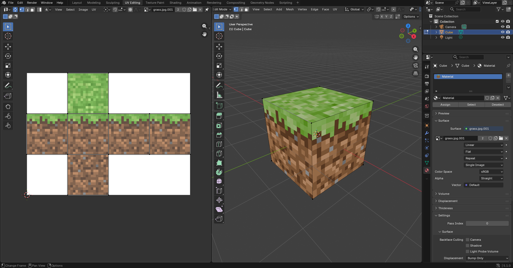
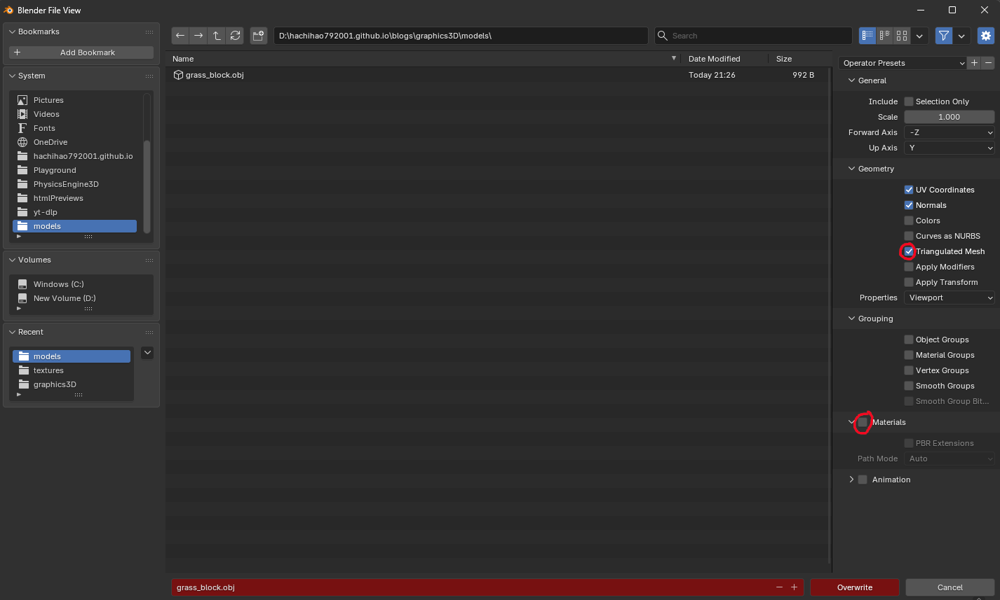
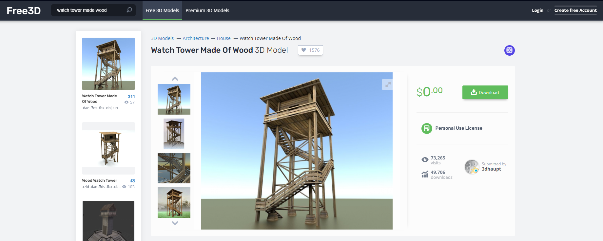

Cách import file Obj và Demo tổng kết
Từ đầu tới cuối ta chỉ làm việc với Cube, đã tới lúc biến nó thành một thế giới 3D với đầy đủ hình dạng 😳 Blog này mình sẽ chỉ bạn cách import file .obj và sau cùng là làm một demo cuối để kết thúc series này 😳Việc import file .obj thật ra khá đơn giản, nó thật ra là một file dạng văn bản thuần, bạn có thể mở nó bằng notepad và xem thử. Ta sẽ bắt đầu bằng 1 ví dụ đơn giản, mình đã làm 1 cục cube có texture Grass block của Minecraft trong blender (cách làm không nằm trong scope của blog này, bạn có thể tìm blender tutorial nếu muốn 😅):


# Blender 5.1.0
# www.blender.org
o Cube
v 1.000000 1.000000 -1.000000
v 1.000000 -1.000000 -1.000000
v 1.000000 1.000000 1.000000
v 1.000000 -1.000000 1.000000
v -1.000000 1.000000 -1.000000
v -1.000000 -1.000000 -1.000000
v -1.000000 1.000000 1.000000
v -1.000000 -1.000000 1.000000
vn -0.0000 1.0000 -0.0000
vn -0.0000 -0.0000 1.0000
vn -1.0000 -0.0000 -0.0000
vn -0.0000 -1.0000 -0.0000
vn 1.0000 -0.0000 -0.0000
vn -0.0000 -0.0000 -1.0000
vt 0.500000 1.000000
vt 0.249018 0.666667
vt 0.500000 0.666667
vt -0.001964 0.333333
vt 0.249018 0.333333
vt 1.001964 0.666667
vt 0.750982 0.333333
vt 1.001964 0.333333
vt 0.500000 0.333333
vt 0.249018 0.000000
vt 0.500000 0.000000
vt 0.750982 0.666667
vt 0.249018 1.000000
vt -0.001964 0.666667
s 0
f 5/1/1 3/2/1 1/3/1
f 3/2/2 8/4/2 4/5/2
f 7/6/3 6/7/3 8/8/3
f 2/9/4 8/10/4 6/11/4
f 1/3/5 4/5/5 2/9/5
f 5/12/6 2/9/6 6/7/6
f 5/1/1 7/13/1 3/2/1
f 3/2/2 7/14/2 8/4/2
f 7/6/3 5/12/3 6/7/3
f 2/9/4 4/5/4 8/10/4
f 1/3/5 3/2/5 4/5/5
f 5/12/6 1/3/6 2/9/6
- 8 dòng tiếp theo, các dòng bắt đầu bằng "v", chính là từng đỉnh của chúng ta, chính là 8 đỉnh của cube.
- 6 dòng tiếp theo, các dòng bắt đầu bằng "vn", là viết tắt của vertex normal, là vector pháp tuyến của từng mặt phẳng. Bạn có thể chưa thấy sự liên hệ nào giữ các "v" và "vn", nhưng nó sẽ được làm rõ ở phần cuối.
- 14 dòng tiếp theo, các dòng bắt đầu bằng "vt", là viết tắt của vertex texture, chính là các tọa độ UV
- Dòng tiếp theo, dòng bắt đầu bằng s, viết tắt của smooth, 0 nghĩa là smooth đang tắt, ta không cần quan tâm giá trị này vì engine ta không hỗ trợ 😅.
- 12 dòng cuối cùng, các dòng bắt đầu bằng "f", là viết tắt của face. Cái này là cái quan trọng nhất, mỗi một hàng là thông tin 3 đỉnh của một tam giác. Mỗi đỉnh có dạng là index tọa độ/index UV/index pháp tuyến, nghĩa là đỉnh đó sẽ lấy tọa độ, UV, pháp tuyến theo tương ứng index (đếm từ 1) của 3 phần trên, phần này chính là phần liên kết 3 phần trên lại. Thật ra nếu mình không chọn Triangulated Mesh lúc export từ Blender thì mỗi cái f trong đây sẽ có 4 đỉnh, là một quad, mà engine của chúng ta không hỗ trợ quad 😅.
Hiểu được cấu trúc của file obj rồi, giờ nó chỉ đơn giản như một bài Nhập môn lập trình đọc file thôi 😅 Pseudocode có dạng như sau:
vertices = []
uvs = []
triangles = []
foreach line in lines:
if line bắt đầu bằng #:
bỏ qua
if line bắt đầu bằng v:
split theo " "
đẩy các giá trị vào vertices
if line bắt đầu bằng vt:
split theo " "
đẩy các giá trị vào uvs
if line bắt đầu bằng f:
split theo " "
foreach thông tin đỉnh:
split theo "/"
lấy index tọa độ, index UV, index pháp tuyến
tạo Triangle mới với thông tin 3 đỉnh đã lấy được
đẩy vào trianglesparseOBJ(objText) {
const vertices = [];
const uvs = [];
const triangles = [];
const lines = objText.split("\n");
for (let line of lines) {
if (!line || line.startsWith("#")) continue; // bỏ qua comment
if (line.startsWith("v ")) {
const values = line.split(" ");
vertices.push(new Vector3(
parseFloat(values[1]), // values[0] là "v", không lấy
parseFloat(values[2]),
parseFloat(values[3])
));
} else if (line.startsWith("vt ")) {
const values = line.split(" ");
uvs.push(new Vector2(
parseFloat(values[1]), // values[0] là "vt", không lấy
1 - parseFloat(values[2]) // lật ngược giá trị v lại
));
} else if (line.startsWith("f ")) {
const vertexInfoStrs = line.split(" ").slice(1); // split xong bỏ đi phần tử đầu ("f")
let triVertices = [];
let triUVs = [];
for (let vertexInfoStr of vertexInfoStrs) {
const vertexInfo = vertexInfoStr.split("/");
const vertexCoord = vertices[parseInt(vertexInfo[0]) - 1]; // index đếm từ 1
const vertexUV = uvs[parseInt(vertexInfo[1]) - 1]; // index đếm từ 1
triVertices.push(vertexCoord);
triUVs.push(vertexUV);
}
let newTri = new Triangle(triVertices, triUVs, this.color);
triangles.push(newTri);
}
}
return triangles;
}class Mesh {
constructor(tris = []) {
this.tris = tris;
}
setTriangles(tris, color) { // hàm để set triangle sau nếu chưa thể set được lúc tạo object
this.tris = [];
for (let tri of tris) {
this.tris.push(new Triangle(
[tri.vertices[0].clone(), tri.vertices[1].clone(), tri.vertices[2].clone()],
[tri.uv[0].clone(), tri.uv[1].clone(), tri.uv[2].clone()],
color
));
}
}
}class Cube extends Mesh {
constructor() {
super(Cube.generateInitialTriangles());
}
static generateInitialTriangles() { // chuyển thành hàm static vì bạn không thể sử dụng this. khi truyền cho super
...
return tris;
}
}class GameObject {
constructor(pos, eulerAngles, scale, color, mesh) { // nhận vào một mesh (GameObject không quan tâm nó tạo các tam giác bằng cách gì)
this.pos = pos;
this.scale = scale;
this.rotation = Quaternion.buildQuaternionEuler(eulerAngles);
this.color = color;
this.mesh = mesh;
}
rotate(eulerX, eulerY, eulerZ) {
let q = Quaternion.buildQuaternionEuler(new Vector3(eulerX, eulerY, eulerZ));
this.rotation = Quaternion.multiply(q, this.rotation);
}
getTransformedTriangles() {
let transformedTris = [];
for (let tri of this.mesh.tris) { // sử dụng this.mesh.tris thay vì this.tris
let transformedTri = tri.clone();
transformedTri.mulMat4x4(Mat4x4.Scale(this.scale.x, this.scale.y, this.scale.z));
transformedTri.rotate(this.rotation);
transformedTri.mulMat4x4(Mat4x4.Translation(this.pos.x, this.pos.y, this.pos.z));
transformedTri.updateWorldVertices();
transformedTris.push(transformedTri);
}
return transformedTris;
}
}class ObjMesh extends Mesh {
constructor(objURL) {
super(); // chưa lấy được thông tin triangles lúc khởi tạo
this.load(objURL);
}
async load(url) {
const response = await fetch(url);
const objText = await response.text(); // lấy thông tin text từ những gì được fetch về
const triangles = this.parseOBJ(objText); // parse thành thông tin tam giác
this.setTriangles(triangles);
}
parseOBJ(objText) { // hàm parseOBJ mà ta đã làm ở trên
const vertices = [];
const uvs = [];
const triangles = [];
const lines = objText.split("\n");
for (let line of lines) {
if (!line || line.startsWith("#")) continue;
if (line.startsWith("v ")) {
const values = line.split(" ");
vertices.push(new Vector3(
parseFloat(values[1]),
parseFloat(values[2]),
parseFloat(values[3])
));
} else if (line.startsWith("vt ")) {
const values = line.split(" ");
uvs.push(new Vector2(
parseFloat(values[1]),
1 - parseFloat(values[2])
));
} else if (line.startsWith("f ")) {
const vertexInfoStrs = line.split(" ").slice(1);
let triVertices = [];
let triUVs = [];
for (let vertexInfoStr of vertexInfoStrs) {
const vertexInfo = vertexInfoStr.split("/");
const vertexCoord = vertices[parseInt(vertexInfo[0]) - 1];
const vertexUV = uvs[parseInt(vertexInfo[1]) - 1];
triVertices.push(vertexCoord);
triUVs.push(vertexUV);
}
let newTri = new Triangle(triVertices, triUVs, this.color);
triangles.push(newTri);
}
}
return triangles;
}
}let cubeMesh = new Cube();
let cube1 = new GameObject(new Vector3(0, 0.35, 5), new Vector3(0, 0, 0), new Vector3(0.7, 0.7, 0.7), new Color(255, 0, 0), cubeMesh);
let cube2 = new GameObject(new Vector3(0, 0, 5), Vector3.zero, new Vector3(3, 0.1, 3), new Color(0, 255, 0), cubeMesh);
let lightCube = new GameObject(new Vector3(0, 2, 5), Vector3.zero, new Vector3(0.1, 0.1, 0.1), new Color(255, 255, 255), cubeMesh);let loadedObj = new GameObject(new Vector3(0, 0, 10), Vector3.zero, Vector3.one, new Color(255, 255, 255),
new ObjMesh("https://raw.githubusercontent.com/hachihao792001/hachihao792001.github.io/refs/heads/main/blogs/graphics3D/models/grass_block.obj"));
...
function update(time = performance.now()) {
...
objectTris.push(...loadedObj.getTransformedTriangles());
...
}const img = new Image();
img.crossOrigin = "anonymous";
img.src = "https://raw.githubusercontent.com/hachihao792001/hachihao792001.github.io/refs/heads/main/blogs/graphics3D/images/textures/grass.jpg";
img.onload = () => {
...
};Trước tiên ta cần tạo một class Texture và nó sẽ tự xử lý vụ load từ URL bên trong nó:
class Texture {
constructor(url) {
this.pixels = null;
this.width = 0;
this.height = 0;
this.load(url);
}
async load(url) {
const img = new Image();
img.crossOrigin = "anonymous";
img.src = url;
// tạo một Promise mà hàm resolve của nó được gọi khi img đã load xong, làm vậy để ta có thể await,
// và tại vì ta không thể sử dụng this. trong một hàm lambda (đối tượng đã khác)
await new Promise((resolve) => {
img.onload = () => {
resolve();
};
});
const tempCanvas = document.createElement("canvas");
tempCanvas.width = img.width;
tempCanvas.height = img.height;
const tempCtx = tempCanvas.getContext("2d");
tempCtx.drawImage(img, 0, 0);
this.pixels = tempCtx.getImageData(0, 0, img.width, img.height).data;
this.width = img.width;
this.height = img.height;
}
}class GameObject {
constructor(pos, eulerAngles, scale, color, mesh, texture = null) {
...
this.texture = texture;
}
...
getTransformedTriangles() {
let transformedTris = [];
for (let tri of this.mesh.tris) {
let transformedTri = tri.clone();
...
transformedTri.texture = this.texture;
transformedTris.push(transformedTri);
}
return transformedTris;
}
}Cuối cùng là hàm processTriangles, ta sửa lại nó dùng texture của triangle thay vì xài imgPixels chung chung như trước:
let texColor = tri.color;
if (tri.texture && tri.texture.pixels) { // đảm bảo không null (có truyền texture cho GameObject (vì có thể GameObject không có texture, chỉ sử dụng màu), và nó đã load xong)
let pixelUV = new Vector2(
tri.uv[0].u * baryCoords[0] + tri.uv[1].u * baryCoords[1] + tri.uv[2].u * baryCoords[2],
tri.uv[0].v * baryCoords[0] + tri.uv[1].v * baryCoords[1] + tri.uv[2].v * baryCoords[2],
pixelInvZ
);
pixelUV = Vector2.div(pixelUV, pixelUV.w);
const texX = Math.floor(pixelUV.u * (tri.texture.width - 1)); // <---------------------
const texY = Math.floor(pixelUV.v * (tri.texture.height - 1)); // <---------------------
const texIndex = (texY * tri.texture.width + texX) * 4; // <---------------------
texColor = new Color(tri.texture.pixels[texIndex], tri.texture.pixels[texIndex + 1], tri.texture.pixels[texIndex + 2]); // <---------------------
}let brickTexture = new Texture("https://raw.githubusercontent.com/hachihao792001/hachihao792001.github.io/refs/heads/main/blogs/graphics3D/images/textures/brick.jpg");
let grassTexture = new Texture("https://raw.githubusercontent.com/hachihao792001/hachihao792001.github.io/refs/heads/main/blogs/graphics3D/images/textures/grass.jpg");
let cubeMesh = new Cube();
let cube1 = new GameObject(new Vector3(0, 0.35, 5), new Vector3(0, 0, 0), new Vector3(0.7, 0.7, 0.7), new Color(255, 0, 0), cubeMesh, brickTexture);
let cube2 = new GameObject(new Vector3(0, 0, 5), Vector3.zero, new Vector3(3, 0.1, 3), new Color(0, 255, 0), cubeMesh, brickTexture);
let lightCube = new GameObject(new Vector3(0, 2, 5), Vector3.zero, new Vector3(0.1, 0.1, 0.1), new Color(255, 255, 255), cubeMesh, brickTexture);
let loadedObj = new GameObject(new Vector3(0, 0, 10), Vector3.zero, Vector3.one, new Color(255, 255, 255),
new ObjMesh("https://raw.githubusercontent.com/hachihao792001/hachihao792001.github.io/refs/heads/main/blogs/graphics3D/models/grass_block.obj"),
grassTexture);OKE, mình sẽ dừng engine tại đây, tính tới bây giờ nó cả có các thứ như Lighting, Texture, Shadow, import object, nói chung cũng đủ để tạo ra 1 scene gì đó và này nọ. Với demo cuối cùng, cũng sẽ khá đơn giản, mình sẽ để một thứ gì đó ở giữa, nằm trên mặt đất (cube bự), và cho Directional Light quay xung quanh để mô phỏng mặt trời. Thứ đó phải phức tạp một tí, để demo được shadow chi tiết, qua một hồi tìm kiếm mình tìm được model này trên free3D:

Mình sửa lại khúc khởi tạo và khúc tạo objectTris như sau:
let camera = new Camera(new Vector3(0, 10, -10), new Vector3(-25, 0, 0), 2, 0.2);
...
let brickTexture = new Texture("https://raw.githubusercontent.com/hachihao792001/hachihao792001.github.io/refs/heads/main/blogs/graphics3D/images/textures/brick.jpg");
let woodTexture = new Texture("https://raw.githubusercontent.com/hachihao792001/hachihao792001.github.io/refs/heads/main/blogs/graphics3D/images/textures/Wood_Tower_Col.jpg");
let cubeMesh = new Cube();
let woodTower = new GameObject(new Vector3(0, 0, 0), Vector3.zero, new Vector3(1, 1, 1), new Color(255, 255, 255),
new ObjMesh("https://raw.githubusercontent.com/hachihao792001/hachihao792001.github.io/refs/heads/main/blogs/graphics3D/models/wooden watch tower2.obj"),
woodTexture);
let ground = new GameObject(new Vector3(0, 0, 0), Vector3.zero, new Vector3(30, 1, 30), new Color(0, 255, 0), cubeMesh, brickTexture);
let lightCube = new GameObject(new Vector3(0, 2, 5), Vector3.zero, new Vector3(0.1, 0.1, 0.1), new Color(255, 255, 255), cubeMesh);let objectTris = [];
objectTris.push(...ground.getTransformedTriangles());
objectTris.push(...lightCube.getTransformedTriangles());
objectTris.push(...woodTower.getTransformedTriangles());let dirLightDefaultDir = new Vector3(-1, -1, -1);
let dirLight = new DirectionalLight(dirLightDefaultDir, parseFloat(lightDirIntensitySlider.value));
let dirLightRotation = Quaternion.buildQuaternionEuler(Vector3.zero); // Quaternion đơn vị - chưa xoay gì
...
function update(time = performance.now()) {
...
let q = Quaternion.buildQuaternionEuler(new Vector3(0, dt * 5, 0)); // tạo một Quaternion mới nhân thêm vào rotation của dir light, cho đại một tốc độ
dirLightRotation = Quaternion.multiply(q, dirLightRotation); // nhân vào
dirLight.dir = dirLightRotation.rotateVector(dirLightDefaultDir); // xoay vector ban đầu bằng Quaternion rotation đã update
...
}<div>
Directional light rotate speed:
<input type="range" id="dirRotateSpeed" min="0" max="50" step="0.1" value="10" />
<span id="dirRotateSpeedText" class="slider-value">10</span>
</div>
...
<div>
Shadow:
<input type="checkbox" id="useShadow" checked="checked" />
</div>const lightDirRotateSpeedSlider = document.getElementById("dirRotateSpeed");
const lightDirRotateSpeedText = document.getElementById("dirRotateSpeedText");
const shadowCheckbox = document.getElementById("useShadow");
let useShadow = true;
...
let dirLightRotateSpeed = parseFloat(lightDirRotateSpeedSlider.value);
...
lightDirRotateSpeedSlider.addEventListener("input", () => {
dirLightRotateSpeed = parseFloat(lightDirRotateSpeedSlider.value);
lightDirRotateSpeedText.textContent = dirLightRotateSpeed.toFixed(2);
});
shadowCheckbox.addEventListener("change", () => {
useShadow = shadowCheckbox.checked;
});let q = Quaternion.buildQuaternionEuler(new Vector3(0, dt * dirLightRotateSpeed, 0));function update(time = performance.now()) {
...
if (useShadow) {
dirLight.buildViewAndProjectionMatrix();
dirLight.buildShadowMap(objectTris);
}
...
}processTriangles(tris) {
...
let inShadow = useShadow ? dirLight.isInShadow(pixelWorldPos, triWorldNormal) : false;
...
}Và đây là sản phẩm cuối cùng 😳😳😳: It's beautiful (let's ignore that fact that it's laggy). Chúng ta có thể làm được thứ như vậy chỉ trong một file HTML, không xài một thứ gì third-party, chỉ pure MATH and ALGORITHM.